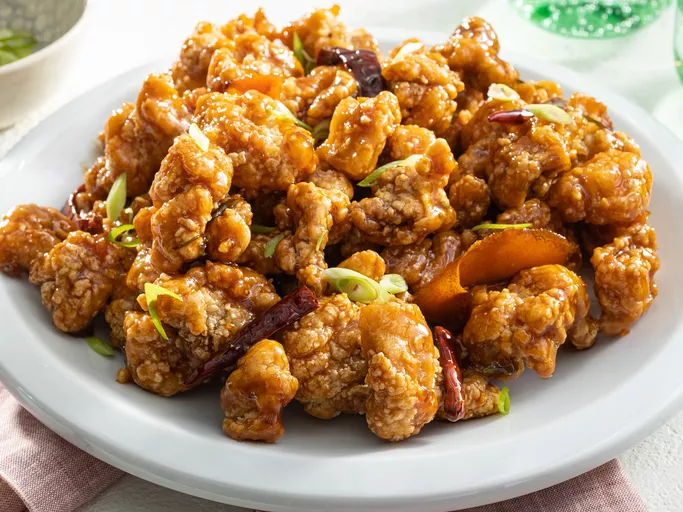

General Tso's Chicken

Description:
General Tso's Chicken is a well-loved Chinese-American dish featuring crispy fried chicken pieces tossed in a sticky, tangy, and mildly spicy sauce.
It's known for its bold, rich flavors and crunchy texture, making it a popular choice for those who enjoy sweet and savory combinations.
Ingredients
Chicken:
- 4 cups vegetable oil for frying
- 1 large egg
- 1 ½ pounds skinless, boneless chicken thighs, cut into 1 1/2-inch pieces
- 1 teaspoon salt
- 1 teaspoon white sugar
- 1 pinch white pepper
- 1 cup cornstarch
Sauce:
- 2 tablespoons vegetable oil
- 3 tablespoons chopped green onion
- 1 clove garlic, minced
- 6 dried whole red chilies
- 1 strip orange zest
- ½ cup white sugar
- ¼ cup soy sauce
- 3 tablespoons chicken broth
- 2 tablespoons peanut oil
- 1 tablespoon rice vinegar
- 2 teaspoons sesame oil
- ¼ teaspoon ground ginger
- 2 teaspoons cornstarch
- ¼ cup water